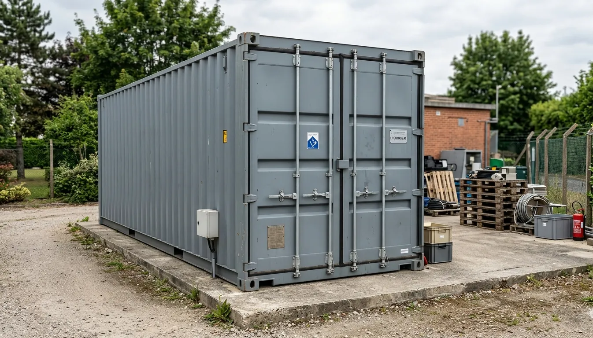

13,86 ou 28,28 m²
Demander un devis pour ce modèle →
Local de stockage
Grand espace de stockage sécurisé, économique et durable.
Dimensions, options & détails
Dimensions
5,90 m × 2,35 m × 2,39 m — 13,86 m²
12,03 m × 2,35 m × 2,39 m — 28,28 m²
Description
Grand espace de stockage sécurisé pour matériel, machines, équipements de chantier ou jardinage intensif. Solution économique et durable.
Options
- Double porte
- Ventilation
- Rayonnages
- Bardage bois ou acier
Personnalisation
Chaque module est entièrement personnalisable (couleur, aménagements, équipements, finitions) afin de répondre précisément à vos besoins et à votre environnement.
Photos non contractuelles : visuels présentés à titre illustratif. Les réalisations finales peuvent varier selon les matériaux, options, dimensions et conditions de mise en œuvre.